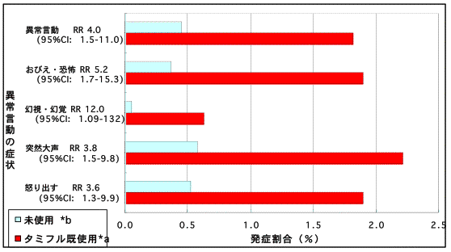

（2007.5.18号）
『薬のチェックは命のチェック』インターネット速報版No85
タミフルによる異常行動死・突然死
5.20薬剤疫学会シンポジウムで徹底討論
来る5月20日、１時〜５時、東京大学医学部構内において、日本薬剤疫学会が主催して、タミフルと異常行動死・突然死などとの因果関係に関する議論の場がもたれる。
日本薬剤疫学会
特別シンポジウム「インフルエンザ罹患後の異常行動と薬剤疫学」
この議論の場には、横田班の研究結果とそれに対して批判し、撤回を要求している浜（ＮＰＯ法人医薬ビジランスセンター：薬のチェック代表）がシンポジストの一人となっている。
浜代表：
特別シンポジウムのタイトルは「インフルエンザ罹患後の異常行動と薬剤疫学」だが、私は、このシンポジウムが持たれることになった経過は、「異常行動死・突然死とタミフルとの因果関係」を議論するためであると理解している。
それは、3月２２日に柳沢厚生労働大臣が、異常行動だけでなく突然死も含めて因果関係を再討論することを国会の場で明言した。そうした経過もあってこの検討回が提案されたと聞いているからだ。
因果関係を否定する論者だけでなく、因果関係を根拠を示して２年以上も前から強く主張してきた私をも含めた検討会がもたれることになったのは、本格的な議論をすることを目指したものと考えられる。
＜スライド１＞
タミフルは中枢抑制作用（dyscontrol, 呼吸抑制）により
異常行動死や突然死を起こす
2007.5.20薬剤疫学シンポジウム
インフルエンザ罹患後の異常行動と薬剤疫学
というより、
「異常行動死・突然死とタミフルとの因果関係に
関する検討会」
との理解で臨む
浜 六郎 ＮＰＯ法人医薬ビジランスセンター（薬のチェック）
＜スライド２＞本報告の概要（１）
- 薬剤疫学、調査の実施/解析に必須のこと
- かぜ脳症と非ｽﾃﾛｲﾄﾞ抗炎症剤（NSAIDs）
リン酸オセルタミビル（タミフル）とは：
- わずかな効果（治療/予防）（略）
- 大きな害：
- タミフルは中枢抑制剤
- dyscontrol（脱制御）で異常行動/幻覚、せん妄
- 呼吸抑制で低酸素性ケイレン、突然死、
- 肺水腫（解剖で）
- 感染症時、急性期にのみ脳中移行
これらは、→疫学調査において考慮が必須
＜スライド３＞本報告の概要（２）
- 「タミフル使用と異常言動との関連性認ず」は誤り
最重要の初日午後の相対危険：約４〜５（有意）
- 他事実と矛盾なく説明可能（整合性）→因果関係支持
- 結論：タミフルは
- 中枢抑制作用（dyscontrol, 呼吸抑制）により
異常行動死や突然死を起こす。
- タミフル服用後の異常行動、事故死、突然死、
ケイレン後後遺症例は、タミフルが原因と考えるべき
＜スライド４＞疫学とは
- 集団における
- 疾病の頻度とその規定要因を解明し
- 規定要因に介入することにより疾病の予防対策
- その効果を検証する 学問
平易にいえば、
- 世の中に
- 流行している（重篤かつ多い）病気の予防対策につながる要因を解明して
- 予防対策を実施し
- その効果を確かめる 学問
（浜六郎：日本の薬剤疫学の課題を考える、薬剤疫学 1(2)：87-95、1996より）
＜スライド５＞薬剤疫学とは、日本の薬剤疫学の課題
薬剤疫学とは
- 薬剤に関係して
- 重篤かつ多発している疾病を扱う学問
日本の薬剤疫学が優先して扱うべき課題：
- 薬剤が関係し、現在日本で
- 最も重篤/多発している（問題の）病気の予防対策につながる要因を解明し、
- 予防対策を講じ、
- その効果を検証すること
（浜六郎：日本の薬剤疫学の課題を考える、薬剤疫学 1(2)：87-95、1996より）
＜スライド６＞
本件についての薬剤疫学の課題は？
- タミフル服用後の異常行動・事故死、突然死について、
- その発症とタミフル服用との因果関係を解明 し、
- タミフルが原因なら、それを中止し、
- その効果を検証すること
＜スライド７＞本件疫学調査に不可欠のこと
- 調査には仮説が必須
- 仮説設定に：疾患、薬物、交絡因子
疾患=インフルエンザ 薬物=タミフル 交絡=他薬剤
- 特徴
疾患：(1)感染時:高サイトカイン血症でＢＢＢ障害
薬物：(2)タミフル未変化体は条件により脳に高濃度移行
(3)タミフル脳中移行は急性期のみ（成人でも）
交絡：ｱｾﾄｱﾐﾉﾌｪﾝ、非ｽﾃﾛｲﾄﾞ抗炎症剤、抗ﾋｽﾀﾐﾝ剤、気管支拡張剤（テオフィリン,エフェドリン,β刺激剤）、鎮咳剤、制吐剤
- 横田班調査：重要手続きを無視（計画/解析）。
＜スライド８〜１６＞
かぜ脳症と非ｽﾃﾛｲﾄﾞ抗炎症剤（NSAIDs）など
かぜ脳症・インフルエンザ脳症重症例の大部分は非ステロイド抗炎症剤（ＮＳＡＩＤｓ）
脳症はインフルエンザ以外のウイルス感染症でもNSAIDs使用で生じる
せん妄・ケイレンは、かぜに用いる抗ヒスタミン剤・鎮咳剤、など他の薬剤でも生じる
＜スライド１７＞NSAIDs使用減少で死亡脳症割合激減（タミフル導入前）
＜スライド１８、１９＞タミフルの効果について
タミフルの効果はわずか、無効なA香港型には無効であった
＜スライド２０＞
タミフルによる嘔吐は初日のみ有意に増加（オッズ比3.4）
タミフル使用終了後、肺炎が有意に増加（オッズ比8.1）
＜スライド２１＞
喘息小児には無効、長引く子が多い。
＜スライド２２＞タミフルの毒性試験
タミフルで、動物は中枢抑制、呼吸抑制を起こして死亡・・・用量-反応関係あり
死亡動物に肺水腫
＜スライド２２−ｂ＞
未変化体タミフル（リン酸オセルタミビル）濃度と死亡割合と相関関係あり
＜スライド２３＞症例１（突然死・肺水腫）
- 3歳健康男児(BW13.5kg). 02.12 A医受診時39.6℃.迅速検査でインフルエンザＡ。軽度喘鳴にてアミノフィリン50mg点滴,吸入。
- 14時頃帰宅、食後タミフル27.5mg(2mg/kg)内服。
- すぐ寝て15分後起き、再度入眠。
- 16時頃（約２時間後）左側臥位で呼吸停止状態に気付かれ、救急搬送。
- B病院で17：15死亡。
- 司法解剖で高度肺水腫(肺炎なし)。
- 脳浮腫高度(脳ヘルニアなし),microgliosis,星状突起断裂にて「インフルエンザ脳症と矛盾しない」とされた。
＜スライド２４＞症例２ （突然死・肺水腫）
- 普段健康な39歳男性。05年2月 19：30頃C病院受診時37.5℃。B型インフルエンザと診断。抗生剤+補液500mL点滴,スルピリン500mg筋注。
- 帰宅後処方どおりに、タミフル2カプセル等を服用し22時頃就寝。
- 翌朝、仰臥位、心肺停止状態を家人が発見。C病院で死亡診断。D大法医にて剖検。
- 推定死亡時刻就寝3時間後（タミフル服用３時間後）。主要解剖所見:拡張し重い心(448g,炎症反応はなし),肺水腫(肺炎なし),尿トライエ−ジ検査陰性,血中トロポニン検査陰性。その結果、拡張型心筋症による急性左心機能不全と診断された。
- 上記２例とも、タミフルとの関連を疑った家族が当センターに相談。
＜スライド２５＞厚生労働省、報告症例より
- 0歳男（16.5mg/回から約8kg;伝い歩きできていた月齢）
- 感冒様症状で近医受診。ｱｽﾍﾞﾘﾝとﾎﾟﾗﾗﾐﾝ処方。1日服用。
- 翌日発熱受診。FluB診断。ﾀﾐﾌﾙ33mg/日,2日服用｡重症感なし
- 3日目,10:30覚醒後に四肢脱力し,反応なし。受診中に呼吸停止、挿管しバギングで蘇生、搬送中に30秒程度の強直性痙攣後, 心肺停止。心マッサージ5分で蘇生。MDZ1mg静注。JCS300.
- 病院ICU入室後にも心肺停止。心マッサージ,ボスミンで蘇生。以降は人工呼吸管理,タミフル経鼻投与,マンニトール,ガンマグロブリン大量、ステロイドパルス（30mg/kg）、抗生剤(CMZ)開始。
- 胸部レントゲン上肺水腫あり。インフルエンザ検査AB（−）。
- 翌日には肺水腫消失。CT、MRIで脳浮腫所見あり。
- 心肺停止４日後、人工呼吸器から離脱。5日目〜リハビリ開始。
- その1週間後〜注入食（ミルク、ヨーグルトなど）開始。
- 伝い歩きできた発達が定額±まで退行。追視なし。寝たきりに
他に、呼吸困難（チアノーゼ）と痙攣、意識消失(失神）･転倒と痙攣例など多数（ほとんどの例が関連あるとみるべき）
＜スライド２６＞症例３（意識消失痙攣後、発達障害）
- 10か月まで心身ともに正常発達。9か月時体重9.0kg,身長71.2cm。
- 03年1月 インフルエンザワクチン接種後感冒様症状出現したが翌日軽快。
- 4日後再び感冒様症状にてA医受診。迅速検査でインフルエンザ陰性。対症療法薬剤を1〜2回服用。その2日後38.6℃発熱。受診したA医でタミフル18mg処方。
- タミフル服用約50分後に脱力、意識消失、チアノーゼ、痙攣を生じた。服用75分後頃A医にて間代性けいれん、意識障害に対しジアゼパム坐剤4mg挿肛。
- 10分で痙攣が止まり約1.5時間後、一応、意識清明となり、とりあえず神経学的異常なしと判断され帰宅。
＜スライド２７＞症例３(続き）
- タミフルはその後服用せず。一時発熱したが対症療法にて問題日の５日後に回復。
- その頃より下肢機能不良（立たせようとしても、足を突っ張り、立とうとしない、匍匐前進せず、下肢を使わないずり這い）
- 1歳、1歳３か月で掴まり立ちせず、喃語のため発達障害を疑われ、1歳5か月時に受診したB病院にて筋肉疾患が疑われた。
- 2歳2か月で掴まり立ち、２歳11か月10m歩行。徐々に発達しているが、現在も社会生活はなお非自立。
- 06年4月,C病院でMRI軽度の左右差疑い。脳波上明らかな発作波なし。心電図QTc0.397秒(4歳時；正常)。
- タミフルとの因果関係の検討を当センターに依頼。
＜スライド２８＞症例４（意識消失痙攣後完全回復）
- 14歳男性。05.12.31、39℃発熱。インフルエンザＡ診断。タミフルだけ服用。１時間後嘔吐。8時間後旅行先から帰宅。9時間後（体温39.6℃）に、２回目タミフル服用（併用薬なし）。1時間後、頭痛と呼吸困難、ウオーと意味不明の声、錯乱。父親が抱いて制止、黒っぽい顔色が急に蒼白となり、眼球上転、四肢弛緩し意識消失。呼吸再開後も呼吸は非常に小さく、止まるのではと親は非常に心配。救急車中、体温は37.5℃。
- 病院到着：呼びかけに反応。ややdrowsy。入院後体温38.8℃に再上昇(1月1日1:45頃)、アセトアミノフェン服用。1時間あまり後（午前３時過ぎ）、突然覚醒、呼吸困難と錯乱状態となり、意味不明の叫び声を上げ、眼球上転（母親確認）。 この時体温36.7℃（2回目タミフル服用7時間後）。
- まもなく意識回復、１回目と２回目のエピソードの記憶中断（1回目、父親の呼びかけや病院での医師の呼びかけはぼんやり記憶、2回目：着替えを看護師に手伝ってもらったこと記憶）。
- 翌日昼前までに回復（2回目服用約15時間後）。脳波異常なし。解熱したままで症状再燃認めず、入院翌々日退院。現高校生
＜スライド２９、３０＞
タミフル使用後ヒトに生じた中枢抑制症状や死亡と、動物実験における中枢抑制症状・死亡の類似点
＜スライド３１＞
タミフルの中枢抑制作用はバルビタール剤、ベンゾジアゼピン剤類似であり、ベンゾジアゼピン受容体（BZD)に作用する？
＜スライド３２＞タミフル服用後の突然死・心肺停止、後遺症例、完全回復例は連続
- 心肺停止・死亡（肺水腫ない例は超短時間のため?）
- 睡眠中突然死し、解剖で肺水腫あり（症例１、２）
- 長時間心肺停止後蘇生。X線上肺水腫、再酸素化で肺水腫は急速消退、重症の後遺症（寝たきり） （4月4日の厚労省開示症例を検討し判明）
- 一時的に心肺停止、痙攣重積状態、回復後後遺症（重度発達障害：退行・遅延：症例３）
- おそらく重症低酸素症による痙攣を２度にわたり生じたが完全回復 (症例４）
- 興奮・呼吸困難/痙攣後、完全回復（厚労省例に多数）
- 単に、脱力や呼吸困難・チアノーゼのみで痙攣なく、完全回復 （厚労省例に多数）
＜スライド３３＞症状の重症度や後遺障害：
重篤度および後遺障害の順に並べると
Ａ)せん妄・異常行動系反応：
- 一過性せん妄・異常行動（極めて短時間な例〜持続する例：一旦治まり、アセトアミノフェン服用し、解熱後に増悪した例など）（厚労省報告で指摘されたアセトアミノフェンとの関連は、タミフルとの交絡につき未調整）
- 窓から飛び出そうとするなど危険な行為があったが事故に至らなかった例、
- 危険行為を遂行し、軽傷であった例、
- 危険行為を遂行、重傷を負い救命された例
- 事故死例であるが自殺とは考えられない例、
- 事故死例中、自殺が疑われる例（中枢抑制剤のADR)
- 精神症状の１週〜3か月（以上）持続例（入院を含む）など。
＜スライド３４＞タミフルによる精神神経症状の特徴（米：ＦＤＡ）
大部分は、初回〜２回目服用後、６時間以内に発症
＜スライド３５＞せん妄発現時の体温
熱せん妄(薬剤非服用） vs タミフルせん妄
高熱時 解熱時が圧倒的に多い
＜スライド３６＞害反応(副作用）死亡例内訳 (2007.4.4現在）
＜スライド３７＞再び、本件疫学調査に不可欠のこと
- 調査には仮説が必須
- 仮説設定に：疾患、薬物、交絡因子
疾患=インフルエンザ 薬物=タミフル 交絡=他薬剤
- 特徴
疾患：(1)感染時:高サイトカイン血症でＢＢＢ障害
薬物：(2)タミフル未変化体は条件により脳に高濃度移行
(3)タミフル脳中移行は急性期のみ（成人でも）
交絡：ｱｾﾄｱﾐﾉﾌｪﾝ、非ｽﾃﾛｲﾄﾞ抗炎症剤、抗ﾋｽﾀﾐﾝ剤、気管支拡張剤（テオフィリン,エフェドリン,β刺激剤）、鎮咳剤、制吐剤
- 横田班調査：重要手続きを無視（計画/解析）。
＜スライド３８＞厚労省報告書横田班報告書：タミフルと異常言動の関連認めず
報告書資料4-7(1) (p20),同4-15(1)-4-15(4)(p36-35)
＜スライド３９＞異常言動の頻度比較 （タミフル使用 vs 未使用）

＜スライド４０＞報告書調査のその他の問題点
調査計画にも解析方法にも、タミフルによる異常言動の過小評価に働く多数のバイアスあり，データ解釈にも重大な誤り
- 調査票配布者総数の記載がなく回収率が不明（基本的欠陥）
- 非ステロイド抗炎症剤の記載欄がない，
- 軽症例が多く混入し重症例の検出が困難，
- タミフル中断例が分母から除かれない，→追加解析では実施
- ランダム化比較試験でタミフルを5日間使用した後で肺炎が有意に頻発したが，この調査では発症7日目までしか観察しない
- 分母と分子のとり方が間違い，
- 最大頻度の初日の昼間の大きな差を，差が逆転する時期で薄めて累積発症率として比較している，など
バイアスを最小化した調査により，タミフルによる異常言動の害が生じやすいことがなお一層明瞭になると思われる．
＜スライド４１＞過小評価に働くバイアス（例）
- 未使用例の分母は区間終了時→分母が過小 →未使用群の頻度が過大に
- タミフル使用例分母：区間終了時→分母が過大→タミフル群の頻度が過小に
- 解決方法：区間中央値を分母にすべき
＜スライド４２〜４４＞タミフル使用後の異常言動発症オッズ比推移
初日午後で有意。 他は有意でなく、同じ程度に。
報告書どおりとすると、矛盾したデータとなる。
＜スライド４５＞報告書批判のまとめ（１）
- 報告書の確実なデータ＝発症初日の１２時までのミフル服用例と，夕方６時まで確実な未使用例の発症割合を比較
- 異常言動0.5％に対して 1.8％→4.0倍
- おびえ・恐怖:0.4%に対し 1.9％→5.2倍
- 幻視・幻覚は0.05％に対し 0.6%→12倍
- 突然大声/うわ言0.6％ vs 2.2％→3.8倍
- 怒り出すは 0.5%に対して 1.9％→3.6倍
いずれの症状も有意に高率に発症していた．
＜スライド４６＞報告書批判のまとめ（２）
- 初日昼（初回服用後に相当）の異常言動が高率であることは、
- 小児のRCTで初日だけ嘔吐が有意高率，
- FDA公表103症例では、１〜２回服用後、服用後６時間以内で発症時間判明例の３分の２が発症
- 動物実験で死亡は全て初回投与後，大部分が4時間以内に死亡していた
などの事実と一致している。
したがって、横田班報告書は，タミフルが異常言動を生じることを強く確認したものといえる。
インフルエンザ罹患時の異常言動とタミフル使用との関連は認められなかった、との横田班結論は間違い。
一旦取り下げ再提出or第三者の再評価に付すべき。
＜スライド４７＞結論（１）
- 重篤な感染後脳症は、NSAIDsの規制によりタミフル開始前に激減した。
- リン酸オセルタミビル（タミフル）は治療にも予防にも真の有効性は証明されていない。
- タミフルは、動物実験、臨床試験、症例報告、ケースシリーズの解析結果から、
中枢抑制作用があり、
dyscontrolにより異常行動や幻覚,せん妄を、
呼吸抑制により低酸素性ケイレン、突然死を起こし、
解剖等で肺水腫を認める起こしうることが明らか。また、それを否定する証拠はない。
＜スライド４８＞結論（２）
- 「不使用10.6％、使用11.9％で有意差なし」から、
タミフル使用と異常言動との関連性を認めなかった、
との趣旨の横田班報告書の結論は誤りである。
報告書データ中の、意味ある初日午前既使用例と、
初日午後6時までの未使用例との、初日昼の頻度を
比較すると、相対危険は、約４〜５（有意）であった。
- この結果は周辺事実（前項３：動物実験、臨床試験、
症例報告、ケースシリーズ結果からみた性質）と矛盾
なく説明可能（整合性あり）、因果関係があるといえる。
- インフルエンザ罹患時、タミフル服用後に報告されてい
る異常行動、事故死、突然死、ケイレン後の後遺症例
の大部分は、タミフルが原因と考えられる。
市民患者が「ほんまもん」の情報を持つことが真の改革につながる
薬の「ほんまもん」情報は『薬のチェックは命のチェック』で！！